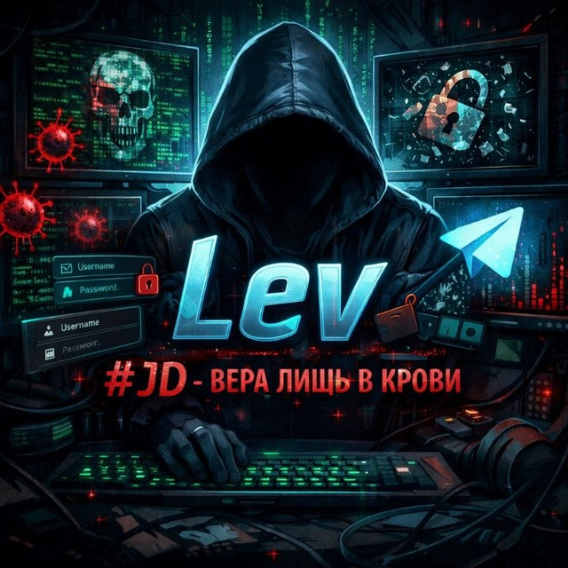

закрытые системы · автоматизация · внутренние инструменты
Jugment Day Group
Тихо проектируем, быстро собираем и поддерживаем софт, который выдерживает реальную нагрузку.
Automation
TypeScript
Python
React
Internal Systems
Browser Extensions
Operations
Linux
Private Infrastructure
Anonymous Shipping
Automation
TypeScript
Python
React
Internal Systems
Browser Extensions
Operations
Linux
Private Infrastructure
Anonymous Shipping
01 / о нас
Создаём вещи, которые действительно нужны.
Jugment Day Group проектирует внутренние платформы, автоматизацию, панели управления и инфраструктурные слои для команд, которым нужен не шум, а контроль.
Снаружи всё выглядит сдержанно. Внутри лежит инженерная дисциплина: надёжность, скорость, понятные интерфейсы и архитектура, которую можно поддерживать.
Фронтенд
Бэкенд
Данные
Безопасность
Инфраструктура
Команда
Люди, которые собирают системы.
Небольшая команда с полным контекстом: от архитектуры и интерфейса до запуска и поддержки.

Founder & Developer
Lev
Проектирование систем, автоматизация, интерфейсы и инфраструктурные контуры.
Стек
Right Hand
annonceu
Операционный контур, координация задач, поддержка процессов и быстрый разбор рабочих узких мест.
Стек
02 / разработки
Разработки с нервной системой.
Каждая система здесь задумана как рабочий инструмент: меньше красивых обещаний, больше скорости, контроля и видимости состояния.
01
↗Northstar Desk
Внутренняя панель управления для операторов, модерации и сервисных команд.
Control surfaceInternal
Открыть кейс
02
↗Sentinel Relay
Слой автоматизации и очередей для распределения задач, событий и реакций системы.
Event routingQueue layer
Открыть кейс
03
↗Ghostline Hosting
Приватный слой деплоя и хостинга для закрытых сервисов, ботов и внутренних API.
Private hostingManaged
Открыть кейс
04
↗Relay Kit
Набор браузерных расширений и утилит для ускорения повторяющихся операторских действий.
IntegrationsOperational
Открыть кейс
03 / контакт
Тихие люди. Точная инженерия.
Если нужен инструмент, внутренняя система или закрытая платформа без визуального мусора и архитектурного бардака, можно начать разговор здесь.